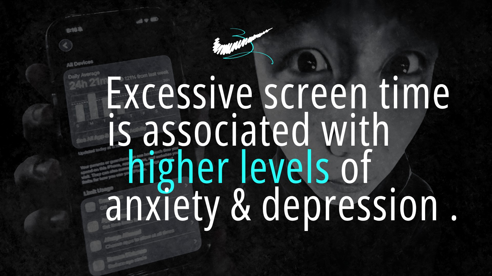
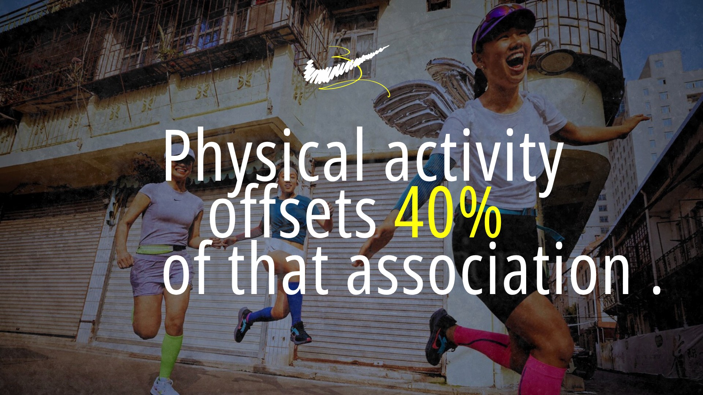
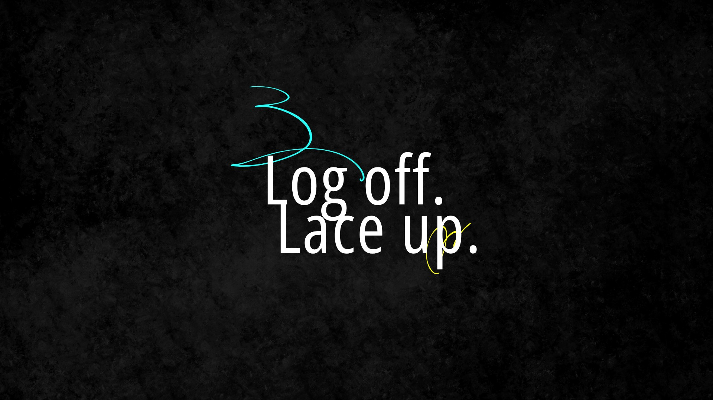
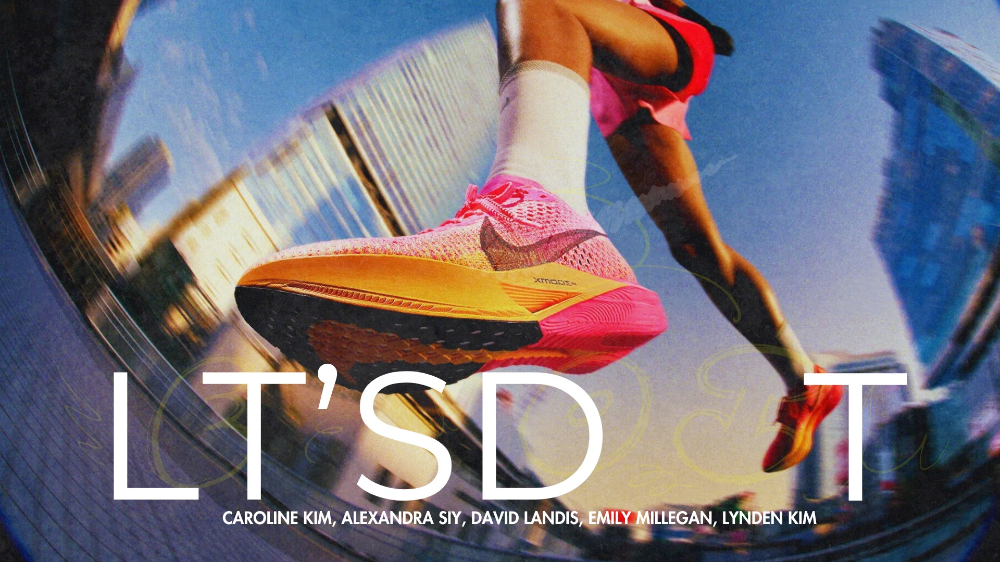
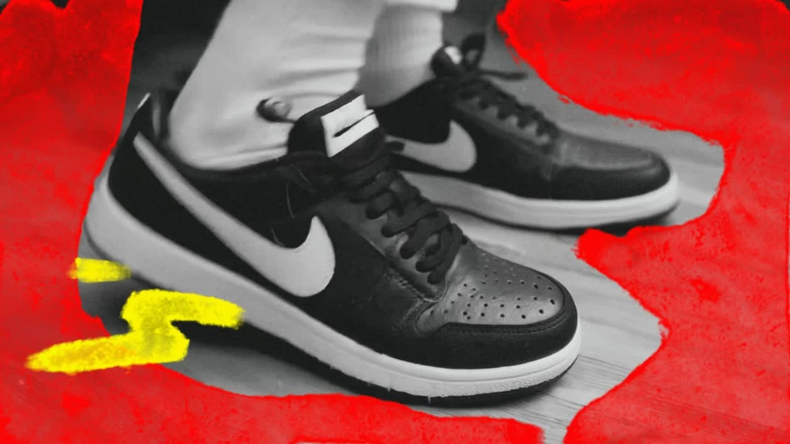
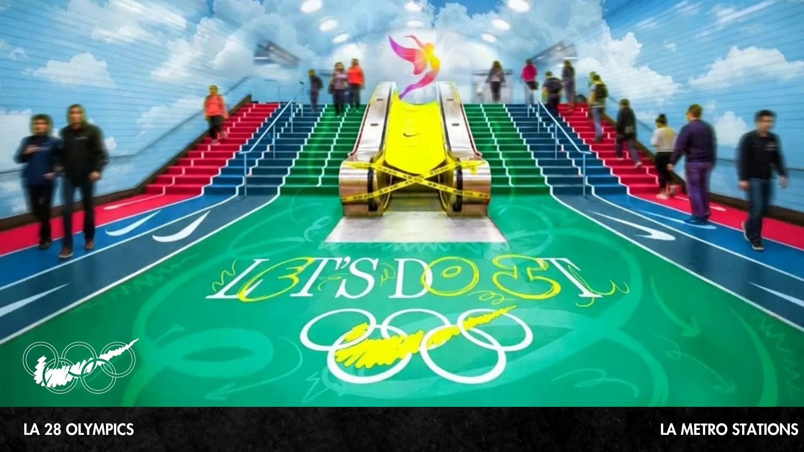
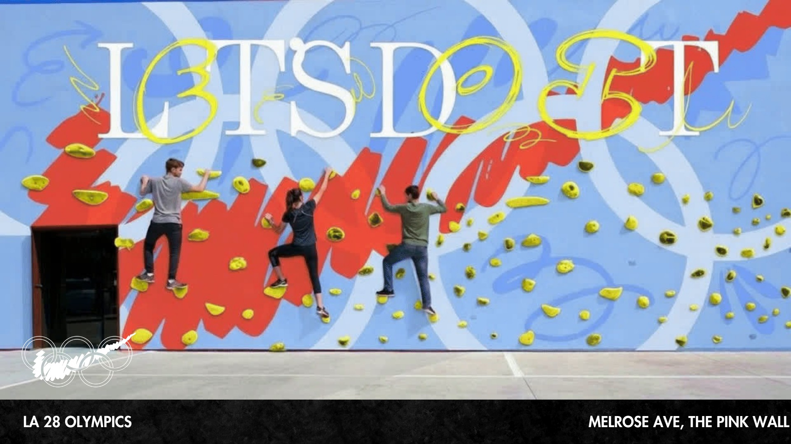
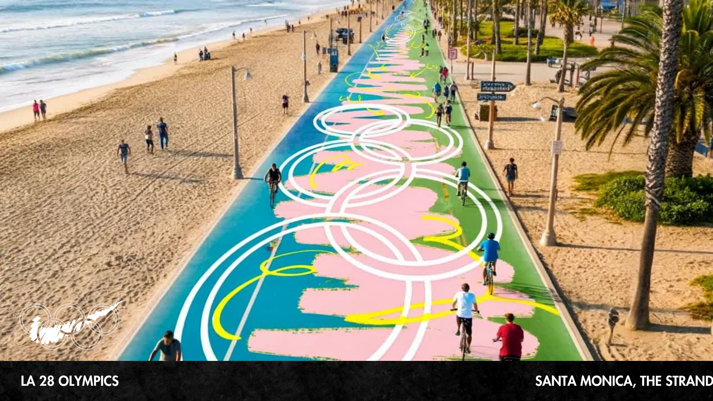
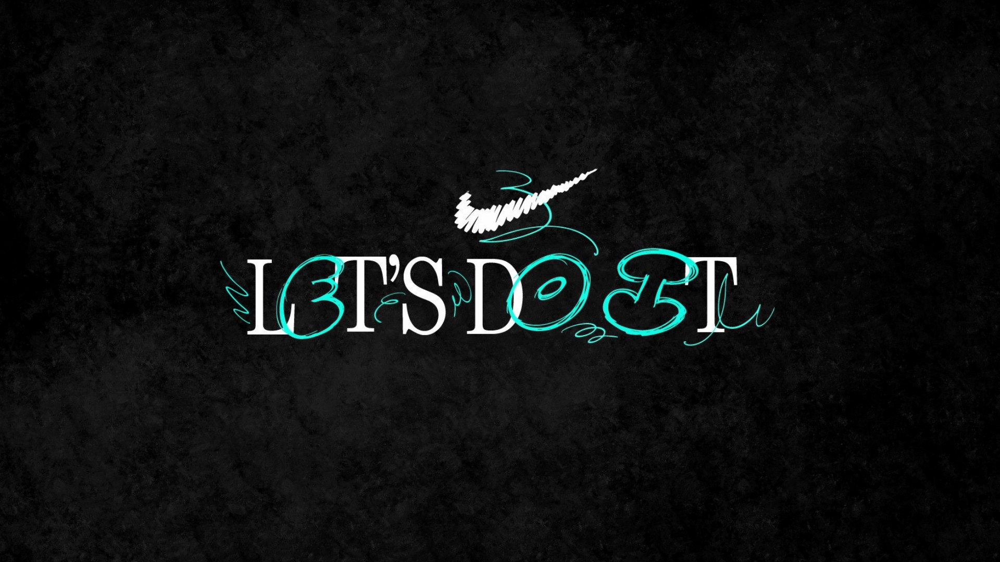

Campaign / Creative direction
Nike.
Starting a conversation that matters.
A pitch to Nike about how they can advocate for the mental health of people ages 14–20
This pitch proposed a Nike campaign focused on advocating for the mental health of teenagers and young adults between 14 and 20. The work explored how nike could use in person installations to inspire people to go outside and be active.
My team and I worked together to come up with our tagline of "Let's Do It" as a nod to the "Just Do It" campaign, though changing it to be about togetherness instead. The project pushed me to think about social impact messaging.
SECTION 01 / 10
Setting the campaign’s visual tone
The opening combines a familiar athletic symbol with expressive hand-drawn marks. It establishes a campaign identity built around energy, movement, and a personal touch.

SECTION 02 / 10
Framing the screen-time concern
The pitch opens with a concern about screen time and wellbeing among young people. This is the campaign’s problem framing; the slide’s health claims would need source review before a final public presentation.

SECTION 03 / 10
Movement as the creative response
The next slide positions physical activity as the campaign’s response to that concern. The case study focuses on the communication idea rather than treating the slide’s numerical claim as a verified result.

SECTION 04 / 10
A simple invitation: log off, lace up
The line turns the broad campaign theme into a short, memorable action. It connects stepping away from a screen with taking part in the world around you.

SECTION 05 / 10
Introducing the campaign idea
The main campaign visual combines Nike’s athletic language with layered, expressive graphics. This is a student concept pitch rather than a commissioned brand campaign.

SECTION 06 / 10
Building an expressive graphic system
The sneaker composition develops the contrast between photography, bright color, and loose drawn lines. That visual system carries into the proposed public installations.

SECTION 07 / 10
Turning a commute into a moment of play
The metro-station concept uses the LA 2028 context to imagine movement within an everyday route. A familiar public space becomes part of the campaign experience.

SECTION 08 / 10
Making participation visible
The climbing-wall proposal turns the campaign message into an activity people can try. The bold graphic treatment makes the installation recognizable as part of the same concept.

SECTION 09 / 10
Extending the idea along the coast
The beach-path mockup scales the visual language into a longer outdoor journey. It explores how the campaign could encourage movement in a setting people already use.

SECTION 10 / 10
One message across many places
The closing identity brings the proposed installations into a single campaign system. The idea is to connect a memorable invitation with accessible opportunities to move.
